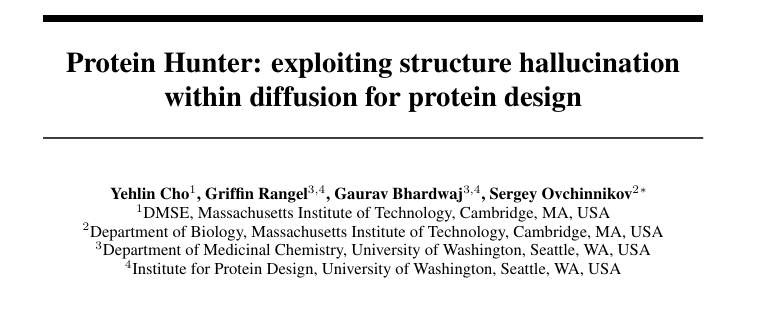
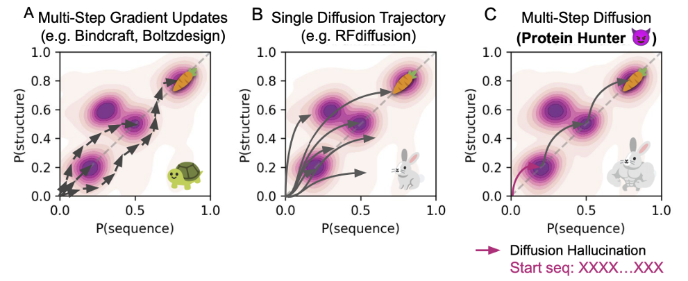
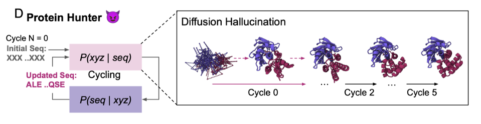
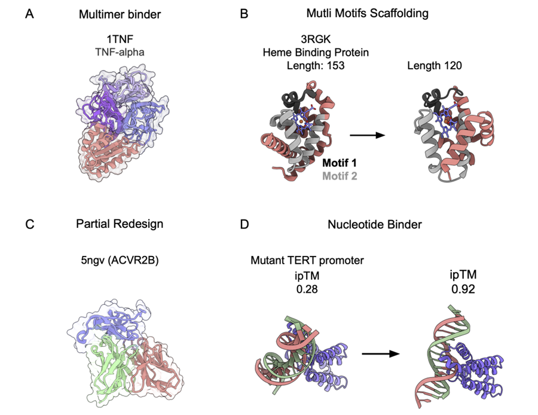

Protein Hunter: Structural Hallucination as a Design Engine
Contents
Have you ever wondered what happens if you hand an AI a "garbage" sequence made entirely of unknown residues (all X) and ask it how that sequence would bind a known target?
Would it output a disordered plate of spaghetti, or would it miraculously fold into something sensible and bind the target? The surprising answer is the second. The MIT Sergey lab and the Baker lab at the University of Washington found that new-generation structure predictors such as AlphaFold3 have a powerful structure hallucination ability: even given a meaningless, all-X sequence, they denoise and hallucinate a structurally reasonable three-dimensional shape out of the protein-structure priors learned during training, sometimes one that binds a target specifically.

Original paper: Protein Hunter: exploiting structure hallucination within diffusion for protein design.
Building on that observation, they developed Protein Hunter: a framework that needs no fine-tuning, is efficient and general, and turns the AI's hallucination "flaw" into a weapon for zero-shot binder design.
01 — From structure prediction to structure hallucination
Existing design methods fall roughly into two families.
- Generative methods such as RFdiffusion can generate new folds with a diffusion model, but because they build a backbone first and design the sequence afterwards, they need heavy sampling and filtering, and it is hard to satisfy structural and sequence constraints at the same time.
- Optimisation methods such as BindCraft and BoltzDesign alternate between structure and sequence with gradient descent. They are precise but converge slowly, get stuck in local minima, and need enormous compute for larger systems and multimers.

The Sergey lab noticed that diffusion-based predictors such as AlphaFold3, Boltz-2 and Chai-1 show a "hallucination" behaviour on extreme inputs: given a fully random or unknown sequence, they still output a plausible, high-confidence protein structure. It resembles the way image diffusion models hallucinate scenes out of noise.
The core idea of Protein Hunter is to convert that hallucination from an error into a tool: use the predictor's internal prior to generate foldable protein structures.
"What is distinctive here is that, unlike earlier hallucination models such as BindCraft, it does not co-optimise sequence and structure. It trusts AlphaFold3's diffusion module for structure and MPNN's inverse folding for sequence, using an all-X input to design structure first and sequence later. The initial conformation is not constrained by any sequence, which lets AF3's structural prior do more work."
02 — From an all-X sequence to a high-quality design
Protein Hunter requires no fine-tuning and no changes to pretrained parameters; it relies entirely on an existing AlphaFold3-class model to do the design.

The workflow is one loop:
- Structure hallucination: feed an all-X sequence (unknown residues) and let the AF3 diffusion module hallucinate an initial structure and binding pose.
- Inverse folding: use ProteinMPNN (or LigandMPNN) to design the most likely amino acid sequence for that backbone.
- Structure re-prediction: feed the new sequence back into AF3 to obtain the updated structure.
Then iterate until structure and sequence converge on a high-confidence protein, in the same spirit as AF2Cycler's use of recycling to improve design accuracy. The loop inherits the generation speed of a diffusion model and the stability of an optimisation method.
On compute, Protein Hunter needs about 10 seconds for a complete design cycle on a 100-residue protein, and 130 seconds even for a 900-residue one. The whole process relies on no external fine-tuning or diverse sampling; quality comes from the cooperative convergence of hallucination, inverse folding and re-prediction.
03 — One framework, many tasks: from unconditional folding to all-atom binder design
Thanks to AlphaFold3's all-atom architecture and prediction accuracy, Protein Hunter is strikingly general. The authors validated it across several design tasks.
Unconditional de novo design. For proteins of 100 to 700 residues, Protein Hunter reaches pLDDT around 0.8 within five cycles while keeping high structural designability (stable TM-score). Compared with a single diffusion pass, structures are more compact and folds more reasonable.
Protein–protein binder design. Against RFdiffusion, Protein Hunter paired with Boltz-2 scored higher ipTM on 9 of 11 targets, and with Chai-1 on 7. It can even design binders against a trimer such as TNF-α without disrupting the trimer.

Small molecules and cyclic peptides. Through the iterative loop, Protein Hunter beat RFdiffusion-AA and BoltzDesign on success rate across four small-molecule targets. For cyclic peptides, adding cyclic positional encoding let generated peptides bind targets such as MDM2 stably, with a clear improvement in structural confidence.
Multi-motif scaffolding and partial redesign. For a heme-binding protein, key motifs can be fixed while the model re-hallucinates the surrounding scaffold. In antibodies, the framework can be kept while only the variable loops (CDRs) are optimised. Both show that Protein Hunter supports precise partial redesign.
Cross-molecule systems. The framework also supports generating RNA- and DNA-binding proteins, raising interface confidence (ipTM) over several rounds to design nucleic-acid recognition sites in a controllable way.
04 — Less helix, more folding
Diffusion models are powerful generators but tend to produce α-helical topologies, at the cost of structural diversity (an old complaint).
Protein Hunter addresses this with a simple mechanism: adding a negative helix bias to the pair features of the AF3 Pairformer module. The bias suppresses helix formation during diffusion and encourages the model to explore β-sheet conformations. The share of β-rich structures rises markedly and the folded space becomes more diverse.
This also shows that biasing features during diffusion can directly steer the secondary-structure distribution of generated proteins. The experiments confirm Protein Hunter outperforms plain single-pass RFdiffusion on all design tasks. The authors plan to add sparse autoencoders to identify structural features and guide the model into even richer fold space.
"This is close to the earlier BindCraft from the same lab, which also had a helix reward/penalty parameter. It also shows, indirectly, that without extra constraints both AF2-based (BindCraft) and AF3-based (Protein Hunter) models converge readily to helical conformations and lose sampling diversity."
05 — Closing
Protein Hunter puts protein design back into the era of "no need to build a new model". It exploits the generative structure hallucination inside AlphaFold3 and, through a structure-first, sequence-later loop, systematically removes the bias of single-pass diffusion to deliver fast, general, high-success design.
Because it builds on an all-atom structure prediction model and works zero-shot, it does not depend on extra training data or fine-tuning, whether the predictor is today's AlphaFold3 or a stronger AF3-class model yet to come. Protein Hunter represents a new "structural hallucination driven" line of thinking, pushing generative design toward something more efficient and more flexible.
Originally published in Chinese on WeChat, October 17, 2025, as MIT Sergey团队新作 | Protein Hunter：利用扩散模型的“结构幻觉”实现高效蛋白质设计.
English version by Yitian Xiao; figures carried over from the Chinese original. Corrections are welcome via an issue.